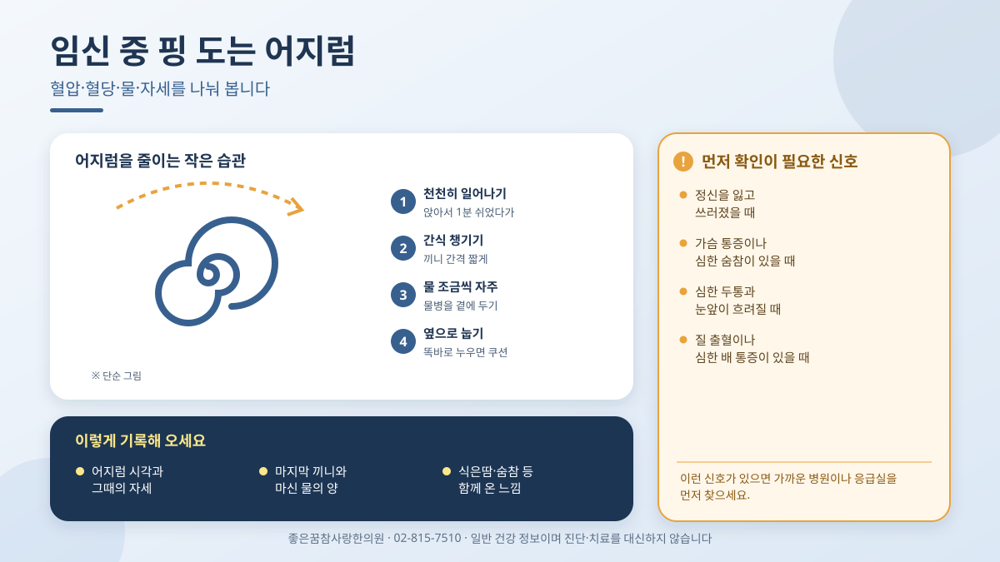

이종호 한의사 감수좋은꿈참사랑한의원 대표원장 (한의사 면허번호 19769)발행 2026-11-26 · 수정 2026-11-26
이 글의 차례
출근길 지하철, 손잡이를 잡고 서 있는데 갑자기 눈앞이 하얘지고 귀가 먹먹해집니다. 이마에 식은땀이 맺히고 다리에 힘이 풀리는 느낌에 급히 자리에 앉습니다. 다행히 몇 분 쉬니 가라앉았지만, 혹시 아기에게 무슨 일이 생긴 건 아닐까 하는 마음이 하루 종일 따라다닙니다.
임신 중 어지럼은 진료실에서 정말 자주 듣는 이야기입니다. 아침에 침대에서 일어날 때, 샤워를 오래 했을 때, 줄을 서서 기다릴 때, 끼니를 놓쳤을 때처럼 상황도 다양합니다. 처음 겪으면 깜짝 놀라시지만, 많은 경우 임신으로 달라진 몸의 흐름과 관련이 있습니다.
그렇다고 모든 어지럼을 그냥 넘겨도 된다는 뜻은 아닙니다. 빈혈이 있는지, 혈압이 많이 낮거나 높지는 않은지, 물과 식사가 부족하지는 않은지를 하나씩 나눠 봐야 합니다. 어떤 어지럼은 산부인과에서 바로 확인해야 하는 신호이기도 합니다.
이 글에서는 임신 중 어지럼이 왜 생기는지, 어떤 어지럼을 조금 더 눈여겨봐야 하는지, 생활에서는 무엇을 바꿔 볼 수 있는지를 정리했습니다. 산부인과 검진은 그대로 이어 가면서, 한의원에서 함께 살필 수 있는 부분도 말씀드리겠습니다.
왜 임신 중에는 어지럼이 잦아질까요
임신을 하면 몸은 아기에게 피와 영양을 보내기 위해 큰 변화를 겪습니다. 호르몬의 영향으로 혈관이 조금 느슨하게 넓어지고, 그만큼 혈압이 평소보다 낮게 나오기 쉽습니다. 특히 임신 초기부터 중기까지는 혈압이 살짝 내려가는 흐름을 보이는 경우가 많습니다.
혈관이 넓어진 상태에서 갑자기 일어서면 피가 다리 쪽으로 몰리고, 머리로 가는 피가 잠깐 줄어들면서 핑 도는 느낌이 생깁니다. 오래 서 있을 때도 비슷한 일이 일어납니다. 다리 혈관에 피가 고이면서 머리 쪽이 잠시 허전해지는 것이지요.
혈당도 한몫합니다. 임신 중에는 아기가 엄마의 당을 계속 가져다 쓰기 때문에, 끼니 간격이 길어지면 혈당이 평소보다 빨리 떨어질 수 있습니다. 입덧으로 잘 먹지 못하는 시기라면 더 그렇습니다. 손이 떨리고 식은땀이 나며 어지러운 느낌이 함께 온다면 공복과 관련이 있을 수 있습니다.
임신 중기 이후에는 커진 자궁이 등 쪽의 큰 혈관을 누르기도 합니다. 그래서 천장을 보고 똑바로 누웠을 때 어지럽거나 속이 메스껍고 숨이 답답해지는 분이 계십니다. 옆으로 돌아누우면 금세 편해지는 것이 특징입니다.
어떤 상황에서 어지러운지가 중요합니다
같은 어지럼이라도 언제, 어떻게 오는지에 따라 짐작할 수 있는 이유가 달라집니다. 진료실에서 어지럼의 상황을 자세히 여쭙는 것도 그래서입니다.
- 앉았다 일어나거나 누웠다 일어날 때 잠깐 핑 도는 경우
- 줄을 서거나 오래 서서 일할 때 점점 아찔해지는 경우
- 끼니를 놓치거나 아침을 거른 오전에 손이 떨리며 어지러운 경우
- 똑바로 누웠을 때 숨이 답답하고 어지러운 경우
- 뜨거운 탕이나 긴 샤워, 더운 실내에서 어지러운 경우
- 하루 종일 기운이 없고 숨이 차며 어지러운 경우
마지막처럼 하루 종일 쉽게 지치고 조금만 움직여도 숨이 차며 어지럽다면 빈혈을 먼저 생각해 봅니다. 임신 중에는 혈액의 물 부분이 많이 늘어나면서 상대적으로 빈혈이 생기기 쉽습니다. 산부인과 혈액 검사 결과를 함께 확인하는 것이 출발점입니다.
임신 시기에 따라 어지럼의 모습이 달라집니다
임신 초기에는 입덧과 함께 오는 어지럼이 많습니다. 잘 먹지 못하고 토하는 날이 이어지면 물과 당이 부족해지고, 그 위에 혈압이 살짝 내려가는 흐름이 겹칩니다. 이 시기에는 조금씩 자주 먹고 마시는 것이 어지럼을 줄이는 첫걸음입니다.
임신 중기에는 몸이 한결 편해지는 분이 많지만, 혈압이 가장 낮게 나오는 시기이기도 해서 일어설 때 핑 도는 느낌을 자주 말씀하십니다. 배가 나오기 시작하면서 활동량이 늘어나는 시기라, 무리한 날 저녁에 어지럼이 오기도 합니다.
임신 후기에는 혈액량이 크게 늘어나며 상대적인 빈혈이 생기기 쉽고, 커진 배 때문에 똑바로 누웠을 때의 어지럼이 많아집니다. 다리가 붓고 숨이 차기 쉬운 시기라 어지럼도 피로와 함께 오는 경우가 많습니다. 시기마다 살필 점이 조금씩 다르다는 것을 알아 두시면 덜 당황하십니다.
계절과 장소도 어지럼에 영향을 줍니다
여름에는 땀으로 물이 많이 빠져나가고 혈관이 더 넓어져서 어지럼이 잦아집니다. 냉방이 약한 버스나 사람이 많은 마트, 더운 부엌에서 특히 조심하셔야 합니다. 외출할 때는 물병과 작은 부채를 챙기고, 한낮의 긴 외출은 피하시는 것이 좋습니다.
겨울에는 난방이 강한 실내와 찬 바깥을 오가며 혈관이 갑자기 좁아졌다 넓어지기를 반복합니다. 따뜻한 실내에 오래 있다가 일어설 때, 뜨거운 물로 오래 샤워한 뒤에 어지럼이 오기 쉽습니다. 욕실 문을 조금 열어 두고, 샤워 뒤에는 잠시 앉아 쉬었다 나오세요.
빙빙 도는 어지럼과 아찔한 어지럼은 다릅니다
어지럼에는 크게 두 가지 느낌이 있습니다. 하나는 눈앞이 캄캄해지고 쓰러질 것 같은 아찔한 느낌이고, 다른 하나는 주변이 빙빙 도는 느낌입니다. 임신 중 흔한 어지럼은 대개 앞의 아찔한 쪽입니다.
주변이 빙빙 돌고, 고개를 돌리거나 돌아누울 때마다 심해진다면 귀 안쪽의 균형 기관과 관련된 어지럼일 수 있습니다. 귀가 먹먹하거나 소리가 울리는 느낌이 함께 있다면 더 그렇습니다. 이런 어지럼은 산부인과와 함께 이비인후과 진료가 필요할 수 있습니다.
느낌을 말로 설명하기 어려우시다면 "눈앞이 하얘졌다", "세상이 돌았다", "머리가 둥둥 뜨는 것 같았다"처럼 떠오르는 대로 표현해 주셔도 충분합니다. 그 한마디가 어지럼을 나눠 보는 데 큰 실마리가 됩니다.
임신 중 어지럼, 흔히 헷갈리는 것
첫째, 어지러우면 곧 빈혈이라고 생각하시는 경우입니다. 빈혈도 중요한 이유지만, 임신 중 어지럼은 혈압, 혈당, 물 부족, 더위, 자세 등 여러 이유가 겹쳐 생기는 일이 많습니다. 철분제만 늘리기보다 상황을 먼저 나눠 보는 것이 좋습니다.
둘째, 어지러우니 아예 움직이지 않으려는 경우입니다. 오래 누워만 있으면 다리 근육이 약해지고 일어날 때 어지럼이 더 심해지기도 합니다. 산부인과에서 안정하라는 말씀이 없었다면, 가볍게 걷는 시간은 유지하시는 것이 도움이 됩니다.
셋째, 어지럼이 지나가면 잊어버리는 경우입니다. 다음 검진 때는 기억이 흐릿해져 "가끔 어지러워요" 정도로만 말씀하시게 됩니다. 언제, 무엇을 하다가, 얼마나 지속됐는지를 짧게 적어 두시면 산부인과 선생님께도 큰 도움이 됩니다.
먼저 이렇게 여쭙니다
처음 오시면 저는 대략 이런 순서로 여쭙니다. 미리 생각해 오시면 상담이 훨씬 수월해집니다.
- 지금 임신 몇 주이시고, 어지럼은 언제부터 시작됐나요?
- 어지러울 때 주로 무엇을 하고 계셨나요? 일어설 때, 서 있을 때, 누워 있을 때 중 언제인가요?
- 최근 검진에서 혈압과 빈혈 수치는 어떻다고 들으셨나요?
- 하루에 물은 얼마나, 끼니는 몇 번 드시나요?
- 입덧이나 구토로 잘 먹지 못하는 날이 있나요?
- 철분제나 다른 약, 영양제를 드시고 있나요?
어지럼과 함께 두근거림이나 귀 먹먹함, 손발 저림이 있었는지도 여쭙습니다. 함께 오는 느낌이 어지럼을 나눠 보는 데 도움이 됩니다.
이 가운데 몇 가지만 답하셔도 괜찮습니다. 어지럼이 왔던 장면 하나를 자세히 떠올려 오시는 것만으로도 이야기가 충분히 시작됩니다.
일상에서 먼저 해 볼 수 있는 것
임신 중 어지럼은 생활의 작은 습관을 바꾸는 것만으로도 횟수가 줄어드는 경우가 많습니다. 한꺼번에 다 하시기보다 내 상황에 맞는 것부터 골라 보세요.
- 아침에 눈을 뜨면 바로 일어나지 말고, 옆으로 돌아누운 뒤 앉아서 1분 쉬었다 일어서기
- 끼니 사이가 길어지지 않도록 견과류, 과일, 크래커 같은 간식을 가방에 챙기기
- 물병을 곁에 두고 조금씩 자주 마시기
- 오래 서 있어야 할 때는 발뒤꿈치를 들었다 내리거나 제자리에서 발을 조금씩 움직이기
- 샤워는 너무 뜨겁지 않게, 너무 오래 하지 않기
- 잘 때는 옆으로 눕고, 똑바로 누워야 할 때는 등 한쪽에 쿠션을 받치기
어지럼이 오기 시작하면 버티지 말고 바로 앉거나, 앉을 곳이 없으면 쪼그려 앉으세요. 머리를 무릎 높이 가까이 낮추면 머리로 가는 피가 빨리 돌아옵니다. 쓰러지면서 배나 머리를 부딪히는 것이 더 위험하니, 체면보다 몸을 먼저 생각해 주세요.
출퇴근 시간이 길다면 조금 덜 붐비는 시간대를 고르거나, 임산부 배려석을 망설이지 말고 이용하시길 권합니다. 직장에서 오래 서서 일하신다면 중간중간 앉아 쉴 수 있도록 미리 이야기해 두시는 것도 좋습니다.
철분제를 드시는 분은 공복에 먹으면 속이 불편해 식사를 거르게 되는 경우가 있습니다. 이럴 때는 드시는 시각이나 방법을 산부인과에 여쭤 조정해 보세요. 속이 편해야 끼니를 지킬 수 있고, 끼니를 지켜야 어지럼도 덜합니다.
한의원에서 함께 살필 수 있는 경우
- 검사에서 큰 이상은 없다는데 일어설 때 어지럼이 자주 오는 경우
- 쉽게 지치고 손발이 차며 기운이 없는 날이 이어지는 경우
- 입덧이 지나간 뒤에도 입맛이 없고 소화가 더딘 경우
- 잠을 설쳐 낮에 머리가 무겁고 띵한 경우
- 목과 어깨가 굳어 머리가 무겁게 느껴지는 경우
좋은꿈참사랑한의원에 오시면 먼저 아래 '먼저 확인이 필요한' 신호가 없는지부터 봅니다. 그다음 맥을 짚고, 필요하면 앉은 자세와 선 자세에서 혈압을 재며, 식사와 물, 잠, 대소변을 여쭙습니다. 산부인과 검사 결과가 있다면 함께 펼쳐 놓고 이야기합니다.
진찰한 내용을 바탕으로 생활에서 바꿔 볼 것 하나와 함께, 지금 몸 상태에 맞는 관리 방법을 정합니다. 임신 중 침은 자리와 깊이, 시간을 조심스럽게 고르고, 한약은 산부인과와 상의한 뒤 드시는 철분제와 다른 약을 확인하고 신중하게 결정합니다. 처방받은 약은 산부인과와 상의 없이 멈추지 않습니다.
한의원 진료는 산부인과 진료를 대신하는 것이 아니라 나란히 가는 것입니다. 산부인과에서 아기와 혈압, 혈액 검사를 챙기고, 한의원에서는 그 사이 엄마의 기운과 소화, 잠, 몸의 긴장을 함께 살핀다고 생각해 주시면 됩니다.
이렇게 기록해 오시면 상담이 쉬워집니다
어지럼은 지나가고 나면 기억이 흐려지기 쉽습니다. 1~2주 정도만 간단히 적어 보세요.
- 어지럼이 온 날짜와 시각, 지속된 시간
- 그때 하고 있던 일과 자세
- 마지막으로 먹은 시각과 음식
- 그날 마신 물의 양과 소변 횟수
- 함께 있었던 느낌: 식은땀, 손 떨림, 숨참, 두근거림
- 집에서 잰 혈압이 있다면 그 숫자
기록을 모아 보면 어지럼이 공복과 관련 있는지, 자세와 관련 있는지가 조금씩 보입니다. 같은 기록을 산부인과 검진 때 함께 보여 드리면 이야기가 훨씬 빨라집니다.
어지러운 날에도 나를 탓하지 마세요
임신 중 어지럼은 몸이 아기를 위해 열심히 일하고 있다는 신호이기도 합니다. 예전처럼 움직이지 못하는 자신이 답답하게 느껴지실 수 있지만, 지금은 속도를 조금 늦추는 것이 맞는 시기입니다.
어지럼이 잦은 시기에는 혼자 외출하는 일을 조금 줄이고, 가족에게 어지러울 때 어떻게 도와주면 좋은지 미리 알려 두세요. 앉을 자리를 찾아 주고, 물과 간식을 건네주는 것만으로도 충분합니다. 곁에 있는 사람이 방법을 알고 있으면 엄마의 불안도 한결 줄어듭니다.
이번 주에는 일어나기 전 1분 앉아 있기, 가방에 간식 하나 넣기 가운데 하나만 골라 보세요. 다음에 오시면 어지럼 기록부터 함께 살펴보겠습니다.
이런 증상은 먼저 확인이 필요합니다
- 정신을 잃고 쓰러졌거나 가슴 통증, 심한 숨참이 함께 있는 경우
- 심한 두통과 눈앞이 흐려지는 증상, 갑자기 붓는 얼굴과 손, 질 출혈이나 심한 배 통증이 함께 있는 경우
이런 신호가 있으면 한의원보다 가까운 병원이나 응급실을 먼저 찾으세요.
함께 읽으면 좋은 글
- 임신 중 빈혈이라는 말을 듣고 어지럽고 숨이 찰 때, 철분제와 식사는 어떻게 챙기나요?
- 앉았다 일어설 때 어지러운 것은 어떤 점을 살펴보나요?
- 혈압이 늘 낮게 나오고 쉽게 어지럽고 지칠 때, 저혈압은 무엇을 살피나요?
- 임신 중 입덧이 심할 때는 하루를 어떻게 지내고, 한의원에는 무엇을 알려야 하나요?
- 어지럼이 빙빙 도는지, 아찔한지는 어떻게 구분해서 전하나요?

여쭙는 것
- 지금 임신 몇 주이시고, 어지럼은 언제부터 시작됐나요?
- 어지러울 때 주로 무엇을 하고 계셨나요? 일어설 때, 서 있을 때, 누워 있을 때…
- 최근 검진에서 혈압과 빈혈 수치는 어떻다고 들으셨나요?
생활에서 해 볼 것
- 아침에 눈을 뜨면 바로 일어나지 말고, 옆으로 돌아누운 뒤 앉아서 1분 쉬었다 일어서기
- 끼니 사이가 길어지지 않도록 견과류, 과일, 크래커 같은 간식을 가방에 챙기기
- 물병을 곁에 두고 조금씩 자주 마시기
한의원에서 함께 살필 것
- 검사에서 큰 이상은 없다는데 일어설 때 어지럼이 자주 오는 경우
- 쉽게 지치고 손발이 차며 기운이 없는 날이 이어지는 경우
- 입덧이 지나간 뒤에도 입맛이 없고 소화가 더딘 경우
먼저 확인이 필요한 신호
- 정신을 잃고 쓰러졌거나 가슴 통증, 심한 숨참이 함께 있는 경우
- 심한 두통과 눈앞이 흐려지는 증상, 갑자기 붓는 얼굴과 손, 질 출혈이나 심한 배…
한눈에 보는 표
| 구분 | 핵심 |
|---|---|
| 여쭙는 것 | 지금 임신 몇 주이시고, 어지럼은 언제부터 시작됐나요? 어지러울 때 주로 무엇을 하고 계셨나요? 일어설 때, 서 있을 때, 누워 있을 때 중 언제인가요? |
| 생활에서 해 볼 것 | 아침에 눈을 뜨면 바로 일어나지 말고, 옆으로 돌아누운 뒤 앉아서 1분 쉬었다 일어서기 끼니 사이가 길어지지 않도록 견과류, 과일, 크래커 같은 간식을 가방에 챙기기 |
| 한의원에서 함께 살필 것 | 검사에서 큰 이상은 없다는데 일어설 때 어지럼이 자주 오는 경우 쉽게 지치고 손발이 차며 기운이 없는 날이 이어지는 경우 |
| 먼저 확인이 필요한 신호 | 정신을 잃고 쓰러졌거나 가슴 통증, 심한 숨참이 함께 있는 경우 심한 두통과 눈앞이 흐려지는 증상, 갑자기 붓는 얼굴과 손, 질 출혈이나 심한 배 통증이 함께 있는 경우 |
자주 묻는 질문
임신 중 어지러우면 아기에게 문제가 생긴 건가요?
많은 경우 혈관과 혈압, 혈당의 변화처럼 임신으로 달라진 몸의 흐름과 관련이 있습니다. 어떤 상황에서 어지러운지 적어 두셨다가 산부인과 검진 때 함께 말씀해 주세요.
어지러우면 철분제를 더 먹어야 하나요?
어지럼의 이유가 빈혈이 아닐 수도 있습니다. 철분제의 양은 혼자 늘리지 마시고, 혈액 검사 결과를 보고 산부인과에서 정해 주시는 대로 드시길 권합니다.
임신 중에 한약을 먹어도 되나요?
산부인과와 먼저 상의하고, 드시는 철분제와 다른 약을 모두 확인한 뒤 신중하게 정합니다. 임신 주수와 지금 드시는 것들을 처음에 꼭 알려 주세요.
똑바로 누우면 어지럽고 숨이 답답한데 괜찮은가요?
임신 중기 이후 커진 자궁이 등 쪽 혈관을 누르면 그럴 수 있습니다. 옆으로 돌아누우면 대개 편해지니 옆으로 눕는 자세를 기본으로 하시고, 증상이 계속되면 산부인과에 알려 주세요.
좋은꿈참사랑한의원은 재진 때 지난번 이야기부터 이어서 여쭙니다. 진료시간과 예약은 오시는 길에서 확인하세요.
어디서 상담받을 수 있나요?
좋은꿈참사랑한의원은 서울 동작구 만양로2길 2 신성빌딩 3층·5층(서울 동작구 상도동, 7호선 상도역 3번 출구 근처)에 있습니다. 한의사 3명(이종호 대표원장, 조영기 수석진료원장, 정원영 진료원장)이 진료합니다. 진료시간은 평일 09:30~20:00(점심 13:00~14:00), 토·일·공휴일 09:30~15:00이며, 방문 전 전화로 확인을 권합니다. 예약은 네이버 예약, 카카오톡 상담, 전화 02-815-7510로 받습니다.
이 글은 일반적인 건강 정보이며 개인의 진단이나 치료를 대신하지 않습니다. 증상이 있거나 복용 중인 약이 있다면 진료를 통해 확인하세요. 치료 효과는 개인마다 다를 수 있습니다.
작성 기준: 일반적으로 알려져 있는 건강 정보를 참고해 정리했습니다(대표원장 감수). 증상 기록은 1~2주 동안 하루 1회, 비슷한 시간에 적어 오시면 지난 상태와 비교하기 쉽습니다.